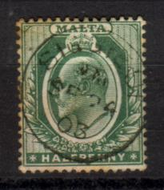
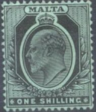

Return To Catalogue - 1860-1902 issues - Malta later issues and miscellaneous
Note: on my website many of the
pictures can not be seen! They are of course present in the
catalogue;
contact me if you want to purchase it.


1/2 p green 1 p red and black 1 p red 2 p grey and lilac 2 p grey 2 1/2 p blue and brown 2 1/2 p blue 3 p lilac and grey 4 p brown and black 4 p red and black on yellow 1 Sh violet and grey 1 Sh black on green 5 Sh red and green on yellow Overprinted 'WAR TAX'
3 p lilac and grey
Value of the stamps |
|||
vc = very common c = common * = not so common ** = uncommon |
*** = very uncommon R = rare RR = very rare RRR = extremely rare |
||
| Value | Unused | Used | Remarks |
| Watermark 'CA Crown', perforation 14 (1903) | |||
| 1/2 p | ** | c | Issued 3-Dec-1903 |
| 1 p red an black | * | c | Issued 5-July-1903 |
| 2 p grey and lilac | *** | *** | Issued 3-Dec-1903 |
| 2 1/2 p blue and brown | *** | *** | Issued 9-Sept-1903 |
| 3 p | ** | * | Issued 26-March-1903 |
| 4 p brown and black | *** | *** | Issued 19-May-1904 |
| 1 Sh violet and grey | *** | *** | Issued 16-April-1903 |
| Watermark 'Multiple CA Crown', perforation 14 (1904) | |||
| 1/2 p | * | c | green (11-June-1905) or deep green (1910) |
| 1 p red and black | ** | * | 24-April-1905 |
| 1 p red | * | c | 1907 |
| 2 p grey and lilac | *** | *** | 22-Feb-1905 |
| 2 p grey | ** | ** | 1911 |
| 2 1/2 p blue and brown | *** | ** | 10-Aug-1904 |
| 2 1/2 p blue | ** | * | 1911 |
| 4 p brown and black | *** | *** | 4-Jan-1906 |
| 4 p red and black on yellow | *** | *** | 1911 |
| 1 Sh violet and grey | *** | *** | 20-Dec-1904 |
| 1 Sh black on green | *** | *** | 1911 |
| 5 Sh | RR | RR | 1911 |
| War Tax | |||
| 3 p | * | * | Watermark 'CA Crown', issued 1918 |
Overprinted 'REVENUE' for fiscal use:
Besides the 1 p red, I have also seen a 1 p red
and black and a 2 p grey and lilac with this 'REVENUE' overprint.
The 3 p and 1 Sh should also exist with this overprint. A
surcharge should also exist: 6 p on 1 Sh.
Furthermore the 3 p value exists with overprint 'Revenue' (small
letters).
1/4 p brown 1/2 p green 1 p red 2 p grey 2 p grey (other design, 1921) 2 1/2 p blue 3 p lilac on yellow 6 p lilac and red 1 Sh grey and black on green
Value of the stamps |
|||
vc = very common c = common * = not so common ** = uncommon |
*** = very uncommon R = rare RR = very rare RRR = extremely rare |
||
| Value | Unused | Used | Remarks |
| Watermark 'Multiple CA Crown', perforation 14 (1913) | |||
| 1/4 p | c | c | brown or deep-brown |
| 1/2 p | * | c | green or deep-green |
| 1 p | * | c | carmine-red or scarlet |
| 2 p | *** | ** | grey or deep-slate |
| 2 1/2 p | ** | * | |
| 3 p | *** | *** | purple on yellow or purple on orange |
| 6 p | *** | *** | dull and bright purple or dull purple and magenta |
| 1 Sh | *** | *** | Coloured (green or olive) or white paper at the back |
| Watermark 'Multiple Script CA Crown', perforation 14 (1921) | |||
| 1/4 p | * | * | 1-Dec-1922 |
| 1/2 p | * | * | 19-Dec-1922 |
| 1 p | * | * | Dec-1921 |
| 2 p | ** | ** | Other design; 16-Feb-1921 |
| 2 1/2 p | *** | *** | 15-Jan-1922 |
| 6 p | *** | *** | 19-Jan-1922 |
Larger sizes
2 Sh blue and lilac on blue 5 Sh red and green on yellow
Value of the stamps |
|||
vc = very common c = common * = not so common ** = uncommon |
*** = very uncommon R = rare RR = very rare RRR = extremely rare |
||
| Value | Unused | Used | Remarks |
| Watermark 'Multiple CA Crown', perforation 14 (1913) | |||
| 2 Sh | RR | RR | purple and bright blue on blue or dull purple and blue on blue |
| 5 Sh | RR | RR | |
| Watermark 'Multiple Script CA Crown', perforation 14 (1922) | |||
| 2 Sh | RR | RR | 19-Jan-1922 |
Overprinted 'WAR TAX'
1/2 p green
Value of the stamps |
|||
vc = very common c = common * = not so common ** = uncommon |
*** = very uncommon R = rare RR = very rare RRR = extremely rare |
||
| Value | Unused | Used | Remarks |
| Watermark 'Multiple CA Crown', perforation 14 | |||
| 1/2 p | c | c | 1918 |
Overprinted 'SELF-GOVERNMENT.' (1922)
1/4 p brown 1/2 p green 1 p red 2 p grey 2 1/2 p blue 3 p lilac on yellow 6 p lilac 1 Sh grey and black on green 2 Sh blue and lilac on blue (red overprint) 5 Sh red and green on yellow
Value of the stamps |
|||
vc = very common c = common * = not so common ** = uncommon |
*** = very uncommon R = rare RR = very rare RRR = extremely rare |
||
| Value | Unused | Used | Remarks |
| Watermark 'Multiple CA Crown', perforation 14 | |||
| 1/2 p | * | * | |
| 2 1/2 p | *** | *** | |
| 3 p | *** | *** | |
| 6 p | *** | *** | |
| 1 Sh | *** | *** | |
| 2 Sh | *** | *** | |
| 5 Sh | RR | RR | Exists with small 'F' of 'SELF': RR |
| Watermark 'Multiple Script CA Crown', perforation 14 | |||
| 1/4 p | * | * | |
| 1/2 p | * | * | |
| 1 p | * | * | |
| 2 p | ** | ** | |
| 2 1/2 p | ** | ** | |
| 6 p | *** | *** | |
| 2 Sh | RR | RR | |
Surcharged 'One Farthing' (1922)
(Image obtained thanks to Emmanuel Cesare)
1 f on 2 p grey
Value of the stamps |
|||
vc = very common c = common * = not so common ** = uncommon |
*** = very uncommon R = rare RR = very rare RRR = extremely rare |
||
| Value | Unused | Used | Remarks |
| Watermark 'Multiple Script CA Crown', perforation 14 | |||
| 1 f on 2 p | c | c | Issued 5-April-1922 Misprint without dot above 'i': *** |
For stamps of Malta issued later than 1920, click here.
{kind=link}
{kind=link}